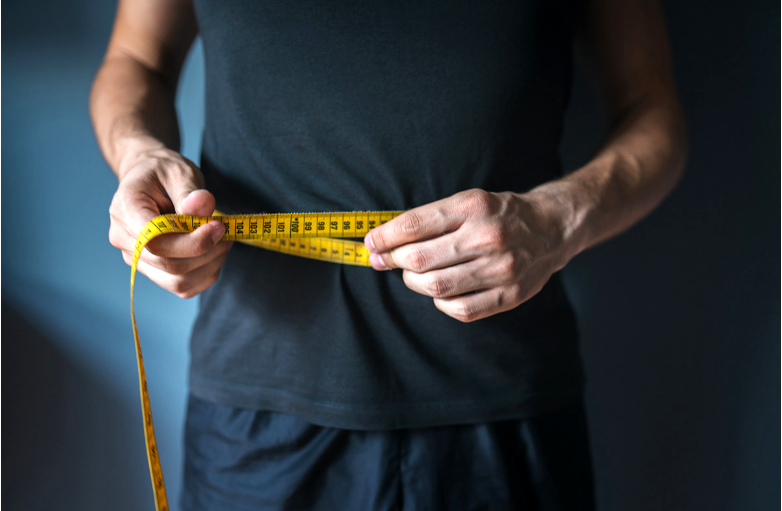

خلفية
لقد تغيّر مفهوم الجسم المثالي عبر الزمن. ففي القرن السابع عشر، على سبيل المثال، كان يُفضَّل أن يكون الشخص ذا جسم كبير وممتلئ، حيث كان ذلك يُعدّ دليلاً على الثراء المادي. أما في يومنا هذا، فغالباً ما يُعتبر الجسم النحيف والممشوق هو المثالي في العديد من السياقات في جزءنا من العالم، وهو ما قد يكون له تأثيرات إيجابية وسلبية على صحة الأفراد من منظور صحي. عندما يؤدي السعي وراء تحقيق هذا النموذج المثالي للجسم إلى زيادة ممارسة التمارين الرياضية، فإن لذلك بالطبع آثاراً إيجابية على الصحة العامة في المجتمع.
لكن يمكن أيضاً أن يكون للمثالية الجسدية عواقب سلبية على صحة الأفراد — على سبيل المثال من خلال تعمد البعض تجويع أنفسهم، مما قد يؤدي إلى أنواع مختلفة من اضطرابات الأكل. قد يؤدي السعي وراء تحقيق جسم رياضي مثالي أيضاً إلى اللجوء إلى المنشطات، مما قد يحول حلم الوصول إلى الجسم المثالي إلى كابوس. تحمل مستحضرات المنشطات مخاطر صحية مختلفة حسب نوع المواد أو الأساليب المستخدمة. ومن الأمثلة على الآثار الجانبية التي قد تسببها المنشطات: مشاكل في القلب، ارتفاع ضغط الدم، تغيّرات في مستويات الكوليسترول، واضطرابات هرمونية. قد يعاني الرجال من انخفاض إنتاج الحيوانات المنوية وانكماش الخصيتين، بينما قد تواجه النساء مشاكل مثل نمو شعر الوجه وتغيرات في الدورة الشهرية.